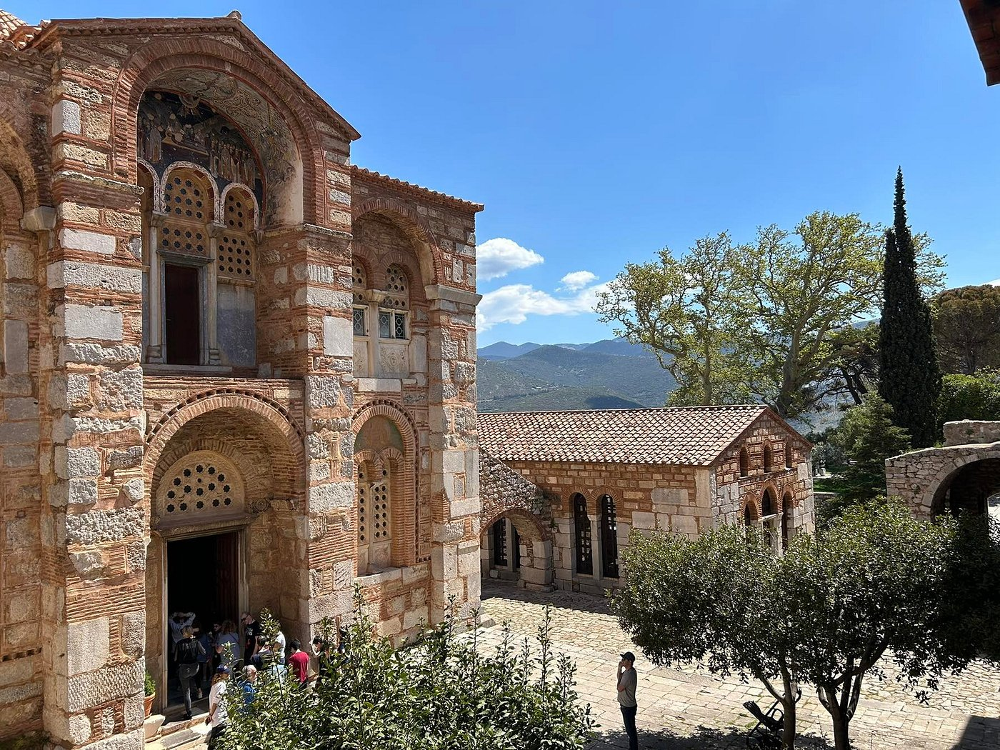
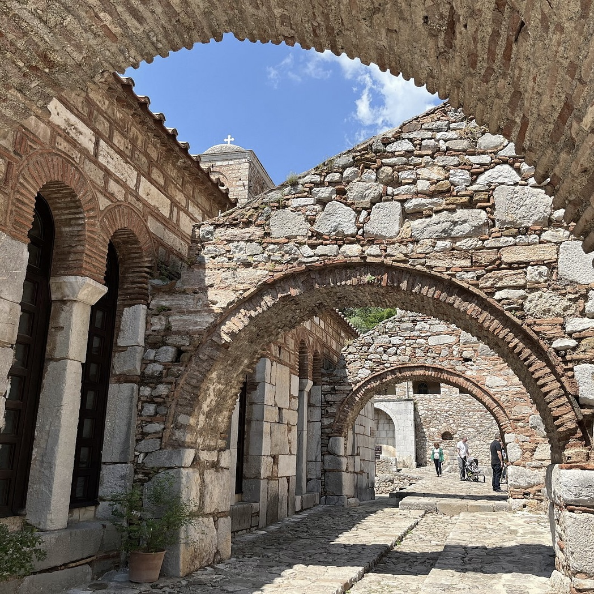
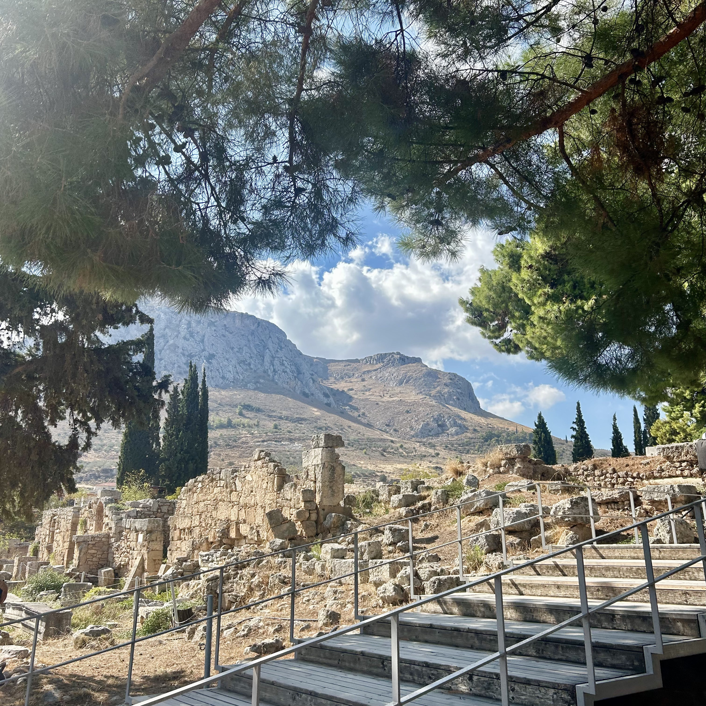
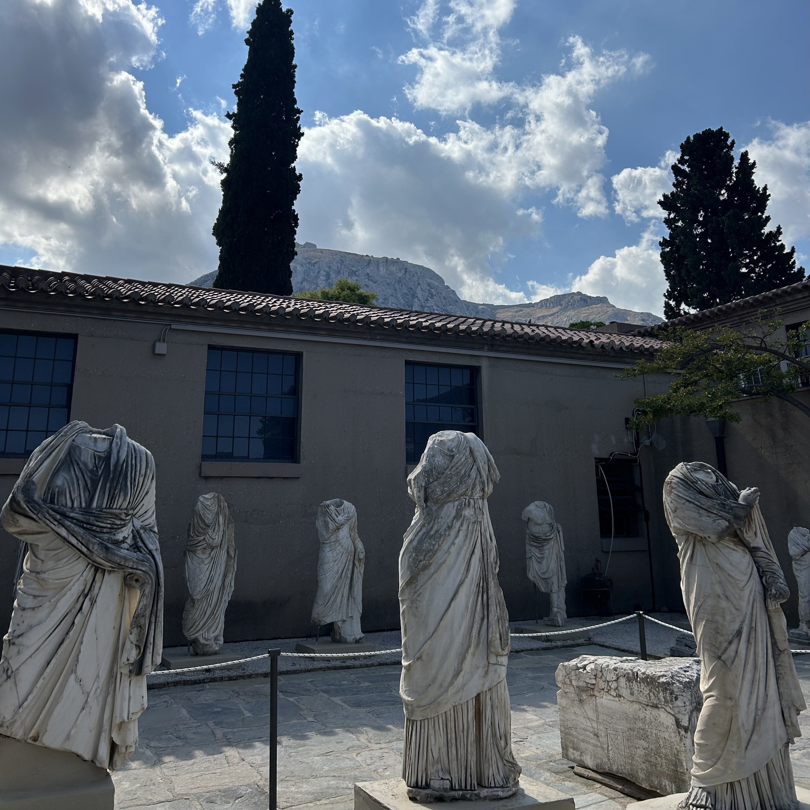
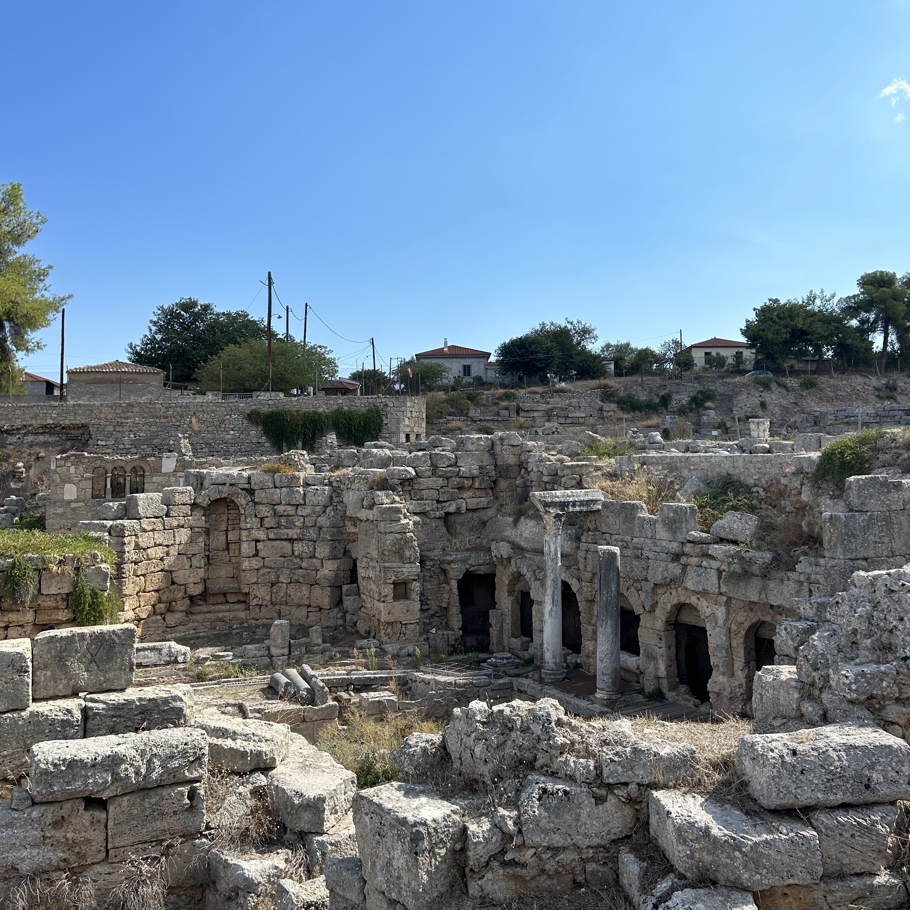

Boeotia: Explore the Monastery of Osios Loukas & Orchomenos.

3-4 hours
Monastery of Hosios Loukas, Mount Helicon, Katholikon, Tomb of Saint Luke, Thebes Archaeological Museum, Thebes, Archaeological Site of Orchomenos, Treasury of Minyas & Boeotia
Custom pickup point




Discover the Heritage of Central Greece: Hosios Loukas, Thebes Archaeological Museum & Orchomenos.
Begin your journey at the Monastery of Hosios Loukas, a breathtaking UNESCO World Heritage Site nestled on the slopes of Mount Helicon. Founded in the 10th century, this remarkable Byzantine monastery is famed for its stunning architecture, intricate gold mosaics, and peaceful surroundings. Explore the Katholikon’s magnificent dome and the crypt that houses the tomb of Saint Luke.Next, head to the Thebes Archaeological Museum, located in the historic city of Thebes. This museum presents a fascinating collection of artifacts from prehistoric times to the classical era, highlighting Thebes’ vital role in Greek mythology and history. From pottery and sculptures to inscriptions and everyday items, the exhibits offer a captivating window into ancient Greek civilization.
Complete your cultural adventure with a visit to the Archaeological Site of Orchomenos, an ancient city known for its impressive Mycenaean heritage. Wander among the ruins of grand structures such as the monumental Treasury of Minyas, ancient fortifications, and sacred sanctuaries. Orchomenos stands as a testament to the power and sophistication of Mycenaean civilization in Boeotia.
Together, these sites provide an enriching experience of Greece’s Byzantine, classical, and prehistoric pasts, perfect for travelers eager to explore history, art, and archaeology.
Private Walking Tour
Entrance fees to venues
Private licensed guide
If you have any questions or would like to book this tour, feel free to reach out:
Email: elisavetmakri@hotmail.com
Phone: +30 69429190805